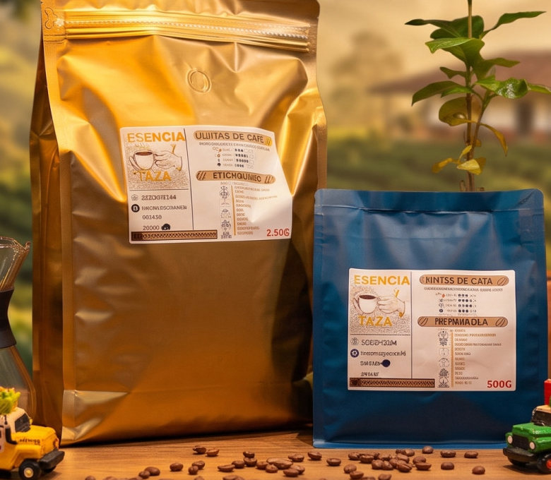

Guías y artículos
Artículos
Escritos por los productores de Esencia y Taza directamente desde Caicedo, Antioquia
 Preparación
Preparación
Métodos de Preparación: Guía Completa
De la cafetera italiana al V60, el AeroPress o el Cold Brew. Descubre cuál se adapta mejor a tu estilo y cómo sacarle el máximo a cada método.
 Variedades
Variedades
Tipos y Variedades de Café que Debes Conocer
Arábica, Robusta, Caturra, Castillo, Geisha y más. Aprende a distinguir las especies, variedades y qué hace especial al café colombiano de origen.

ProcesoDel Grano a la Taza: El Viaje Completo del Café
Desde la semilla en tierra hasta el vapor en tu taza: cultivo, cosecha, beneficio, tostión, molienda y preparación. El recorrido que pocas personas conocen.